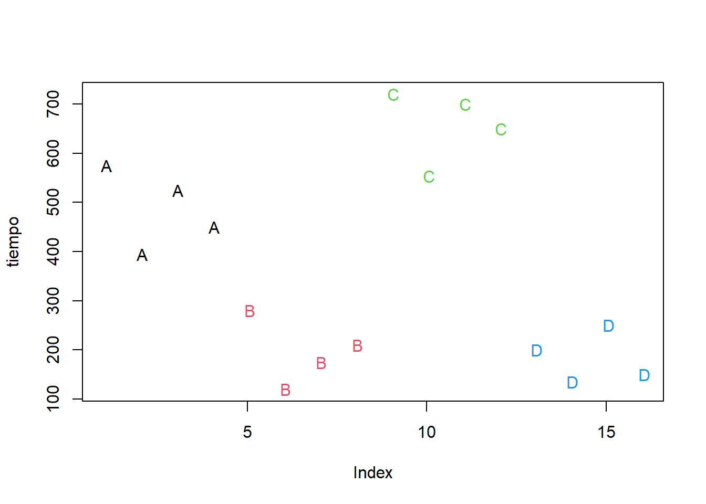
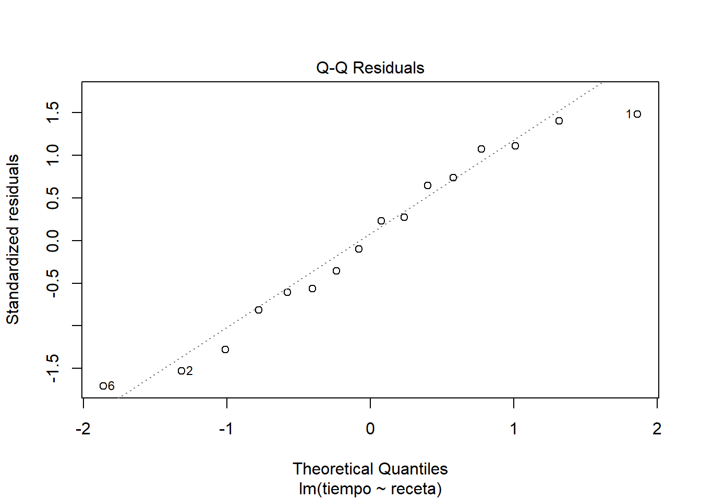
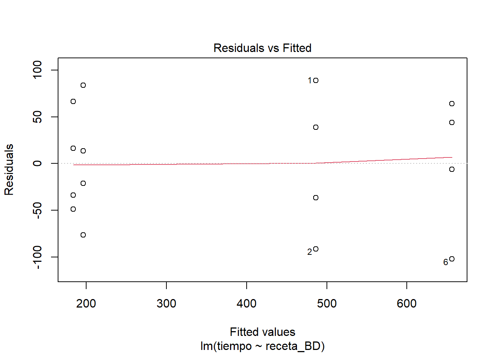
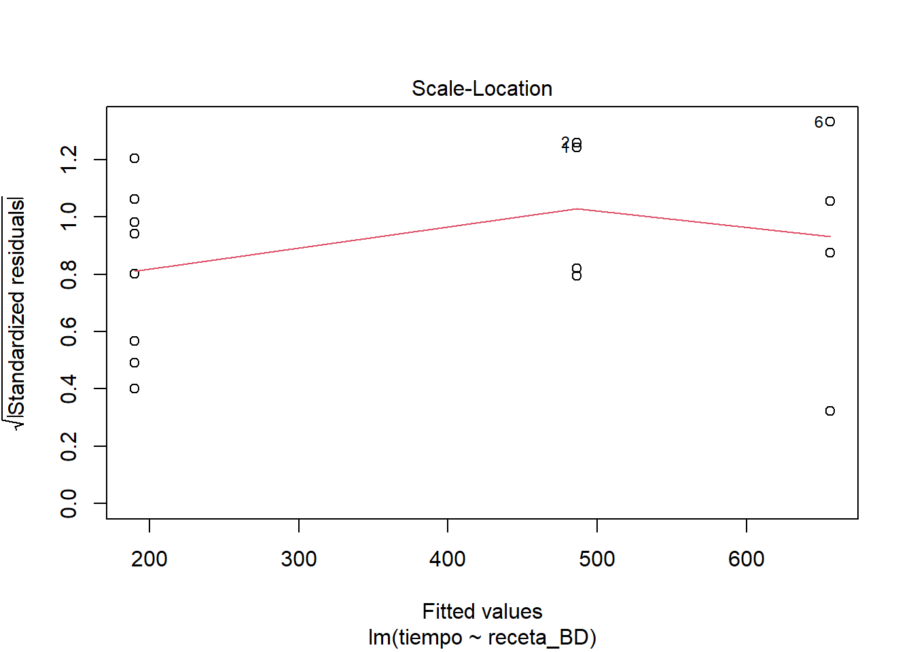
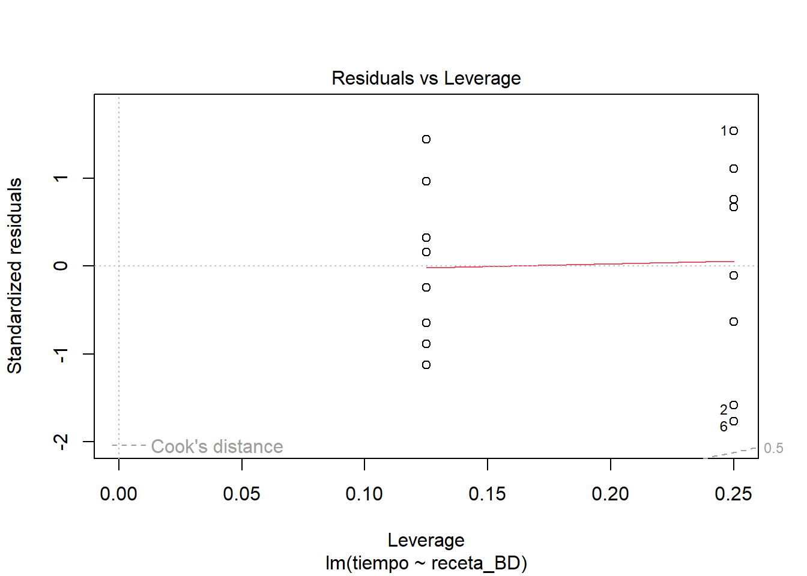
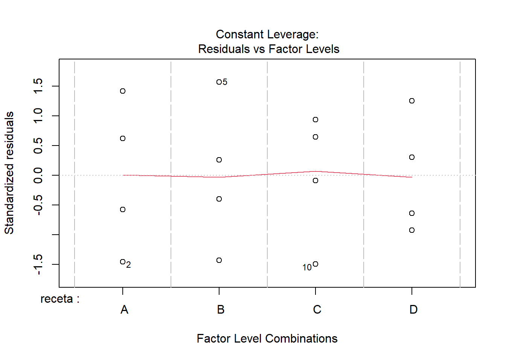
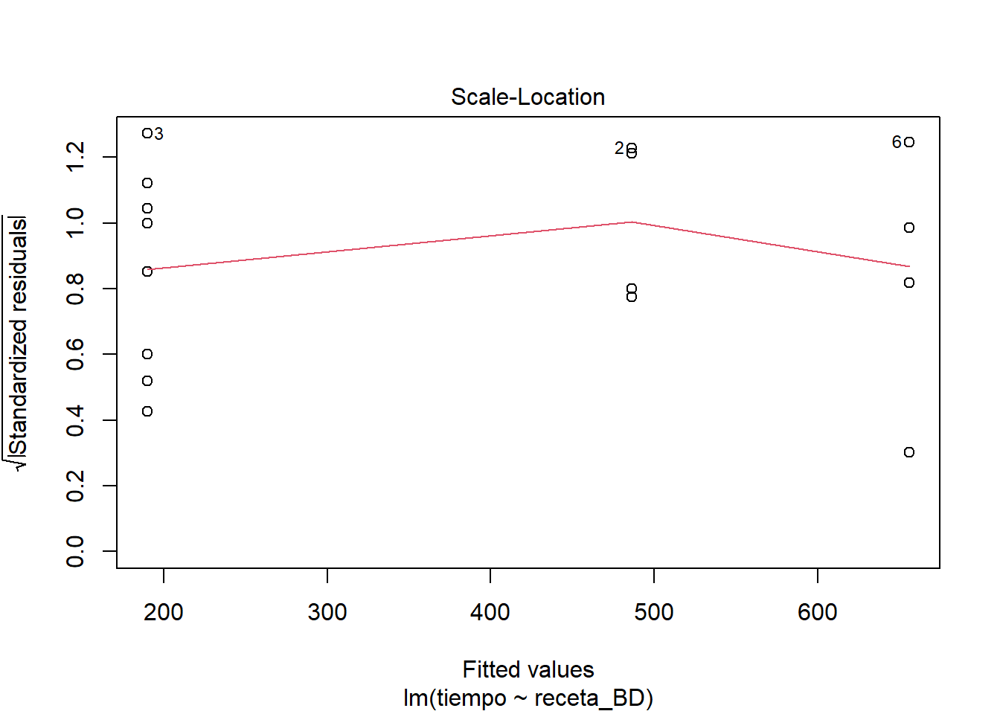
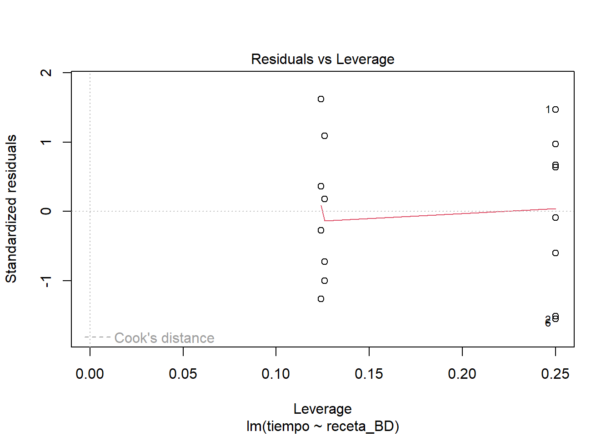

En esta libreta RMarkdown les comparto mis notas de lo que hice en relación con los datos de masa para pizza.
El Estudio de Marcelo es un experimento completamente aleatorizado, no hubo restricciones a la aleatorización como para producir bloques o división en parcelas (parcela dividida). Los tratamientos los ideó Marcelo como tratamientos factoriales, resultado de la combinación de cantidades variables de azúcar y leche, pero finalmente optó por tratarlas como una serie de recetas (sin decirnos que cantidad de leche o azúcar empleo, típico de los cocineros, guardar secretos), así que no nos queda otra que tratar al arreglo de tratamientos como una clasificación simple en recetas (ANOVA de una sola vía dirían otros). El modelo que describe esto es algo así:
\[
y_{ij} = \mu + R_i + \varepsilon_{j(i)}
\]
En donde i tiene 4 niveles, uno por cada receta, j tiene 4 niveles, por el número de repeticiones de cada receta. Por lo tanto, los grados de libertad en el cuadro de análisis de la varianza deben ser 3 para las recetas y 12 para el error.
Exploración tabular de los datos
Una vez leídos los datos del archivo plano texto separado por comas, con acrónimo csv), definí la columna recetas como factor, lo hice con la función mutate para interactuar con la tabla completa. Me asomé a los datos calculando los promedios por tratamiento. Seguí la metáfora de tubos con ayuda de la biblioteca tidyverse o dplyr.
Código
# masa <- read_csv("masa-para-pizza.txt", col_names = TRUE)url_datos <-"https://drive.google.com/file/d/1uVUOqwobv67E5xTsSSxjg9f9qypW-aIS/view"dat_datos_id <-str_extract(url_datos, "(?<=d/)(.*)(?=/view)")url_drive <-"https://docs.google.com/uc?id=%s&export=download"masa <-read.csv(sprintf(url_drive, dat_datos_id)) masa %>%mutate(receta =factor(receta)) -> masa # también puedo guardar resultados asímasa %>%group_by(receta) %>%summarise(media =median(tiempo, na.rm =TRUE), mediana =median(tiempo, na.rm =TRUE),var =var(tiempo))
Use una gráfica simple con letras para las recetas para tener una idea de los datos. Usé la función unclasspara obtener un índice numérico asociado con las recetas, así le doy fácilmente un color distinto a cada receta, aunque son los colores que sean, podría hacer algo semejante para escoger los colores de mi gusto o incluso hacer un vector de colores por nombre, pero para el caso exploratorio esto que hice es muy fácil y rápido.
Código
plot(masa$tiempo, type ="n", ylab ="tiempo")text(masa$tiempo, labels = masa$receta,col =as.integer(unclass(masa$receta)))

Prueba de hipótesis
Me parece que hay buenas razones para pensar que puede detectarse un efecto importante de alguna de las recetas. No encuentro a simple vista mayores razones para pensar que haya heterogeneidad de varianzas o falta de normalidad, aunque los tratamientos de menor tiempo se ven algo más compactos que los más lentos (típico patrón que conduce a la heterocedasticidad, asociación de la varianza y la media). Pero empezaré con lo más simple.
Código
masa_lm <-lm(tiempo ~ receta, data = masa)anova(masa_lm)
Analysis of Variance Table
Response: tiempo
Df Sum Sq Mean Sq F value Pr(>F)
receta 3 638968 212989 44.739 8.64e-07 ***
Residuals 12 57128 4761
---
Signif. codes: 0 '***' 0.001 '**' 0.01 '*' 0.05 '.' 0.1 ' ' 1
Código
summary(masa_lm)
Call:
lm(formula = tiempo ~ receta, data = masa)
Residuals:
Min 1Q Median 3Q Max
-102.000 -39.375 3.875 49.000 88.750
Coefficients:
Estimate Std. Error t value Pr(>|t|)
(Intercept) 486.25 34.50 14.095 7.90e-09 ***
receta B -290.00 48.79 -5.944 6.78e-05 ***
receta C 169.75 48.79 3.479 0.00455 **
receta D -302.50 48.79 -6.200 4.59e-05 ***
---
Signif. codes: 0 '***' 0.001 '**' 0.01 '*' 0.05 '.' 0.1 ' ' 1
Residual standard error: 69 on 12 degrees of freedom
Multiple R-squared: 0.9179, Adjusted R-squared: 0.8974
F-statistic: 44.74 on 3 and 12 DF, p-value: 8.64e-07
El cuadro de ANOVA obtenido sugiere que es razonable rechazar la H0 ómnibus, de manera que estamos justificados si optamos por considerar que todas o algunas recetas están produciendo tiempos significativamente distintos entre sí. El resumen sugiere, dada la reparametrización, que todas las recetas podrían ser distintas de la A y que la D está produciendo los tiempos más cortos de leudado, aunque en tal caso la receta B no está nada lejos. Claro, aquí ya me estoy dejando llevar por lo que ocurrió en este caso, así que estoy arriesgando la generalidad de mis conclusiones. De todos modos correré el riesgo. Una propuesta razonable para considerar esto sería la de proponer que las recetas B y D se comportan de manera equivalente y dejar A y C como dos variantes con mal desempeño. Pero, antes de pasar a eso veamos como se comporta el ajuste del modelo en relación con los supuestos estadísticos. Para eso, veamos gráficas de los residuos.
Código
plot(masa_lm)

Me parece que se ve un comportamiento bastante razonable en los residuos. Si nos ponemos estrictos a lo mejor el supuesto de normalidad en los residuos se ve un poco dudoso y quizás también un poco de heterogeneidad de varianzas. Pero nada muy marcado como para invalidar el ajuste del modelo.
Con los resultados anteriores puedo avanzar con bastante confianza para atender la cuestión de cuál será la receta con la que la masa sube más rápido. La forma que elegí para hacer esto es seguir con un enfoque de modelación, reformular el modelo original y valorar si cambia en forma importante al redefinir el factor de recetas. Otras formas de hacerlo serían el recurrir a pruebas t pareadas, que es lo que Fisher llamó pruebas protegidas por que ya rechazamos la omnibus H0. Otra posibilidad es usar TukeyHSD de la biblioteca stats (se carga al abrir R sin preguntarnos), o podríamos recurrir a la corrección de Boferroni. Lo importante es no olvidar que cuando llegamos a este punto, estas comparaciones las hacemos en un ámbito en gran parte exploratorio. Por eso a mi me gusta mantenerme en el plan de que el modelo es la historia y buscar producir un modelo que incluya también esas comparaciones. Así lo hice. Por lo que vi en los coeficientes estimados las recetas parecen diferir casi todas en rendimiento, salvo la pareja B-D que son las que dan ttiempos más cortos, por lo tanto, la pregunta que para mi sigue es si un modelo en donde no distingo entre estas dos recetas, mantiene un buen ajuste a los datos observados.
Código
masa$receta_BD <-recode(masa$receta, B ="BD", D ="BD")masa_lm_BD <-lm(tiempo ~ receta_BD, data = masa)anova(masa_lm_BD, masa_lm)
Analysis of Variance Table
Model 1: tiempo ~ receta_BD
Model 2: tiempo ~ receta
Res.Df RSS Df Sum of Sq F Pr(>F)
1 12 57128
2 12 57128 0 0
Código
summary(masa_lm_BD)
Call:
lm(formula = tiempo ~ receta_BD, data = masa)
Residuals:
Min 1Q Median 3Q Max
-102.000 -39.375 3.875 49.000 88.750
Coefficients:
Estimate Std. Error t value Pr(>|t|)
(Intercept) 486.25 34.50 14.095 7.90e-09 ***
receta_BD B -290.00 48.79 -5.944 6.78e-05 ***
receta_BD C 169.75 48.79 3.479 0.00455 **
receta_BD D -302.50 48.79 -6.200 4.59e-05 ***
---
Signif. codes: 0 '***' 0.001 '**' 0.01 '*' 0.05 '.' 0.1 ' ' 1
Residual standard error: 69 on 12 degrees of freedom
Multiple R-squared: 0.9179, Adjusted R-squared: 0.8974
F-statistic: 44.74 on 3 and 12 DF, p-value: 8.64e-07
Este resultado me sugiere que hay una mínima pérdida de ajuste a los datos y que el nuevo modelo podría considerarse prácticamente equivalente a la versión más compleja que distingue cada receta. Así que la proposición de que es razonable considerar a las recetas B y D como equivalentes se puede defender. Al hacerlo no pierdo mucho de correspondencia entre los valores que produce el nuevo modelo y los datos. En realidad ya no me interesa averiguar que pasa con las otras recetas, pues ambas tienen un desempeño más lento que las que he indentificado, así que este modelo es el mínimo adecuado para esta historia. ¿Se habrá producido alguna distorsión en otros aspectos estadísticos del modelo?
Código
plot(masa_lm_BD)



El comportamiento de los residuos se ve muy semejante al comportamiento del modelo completo. Sigo sin ver mayores problemas en el ajuste. Es cierto que se ven detallitos que hacen tener ligeras dudas, quizás relacionados con heterocedasticidad. Así que hagamos algo al respecto, aunque no sea más que con fines didácticos.
Opciones avanzadas de análisis
Modelo ponderado
Lo que haremos es utilizar la opción weight de la función lm, esto nos permite hacer lo que se llama modelos de regresión ponderados. Hay muchas posibles razones para utilizar esquemas de ponderación, todos relacionados con la idea de que podemos proponer argumentos sobre qué datos deberían influir más sobre el ajuste del modelo. En este caso utilizaremos la idea que anoté al principio y que es relativamente común encontrarla en la práctica. Muchas veces pasa que cuando el tamaño de la respuesta aumenta también lo hace la variación con la que la observamos. Es decir a mayor media, mayor varianza. En el modelo ponderado lo podemos expresar pensando que deberíamos darle menos credibilidad (peso) a las observaciones asociadas con tratamientos que producen medias más grandes.
A continuación les muestro como pondríamos estas ideas en práctica con lm. Lo que haré es construir una expresión que relacione el tamaño de los residuos con las medias de los tratamientos, lo que me permitirá estimar algo parecido a las varianzas asociadas con cada tratamiento en el modelo. A partir de ahí construyo la variable de ponderación que será un expresión relacionada con:
\[
ponderador \propto \frac{1}{\sigma ^2}
\]
Código
# Modelo ponderado para enfrentarnos a la heterocedasticidad# Defino los ponderadores a usarpond <-1/lm(abs(masa_lm$residuals) ~ masa_lm$fitted.values)$fitted.values^2# Ajusto un modelo ponderando dando mayor peso a los tratamientos con menor varianzamasa_lm_pond <-lm(tiempo ~ receta, data = masa, weights = pond)anova(masa_lm_pond)
Analysis of Variance Table
Response: tiempo
Df Sum Sq Mean Sq F value Pr(>F)
receta 3 223.626 74.542 42.822 1.097e-06 ***
Residuals 12 20.889 1.741
---
Signif. codes: 0 '***' 0.001 '**' 0.01 '*' 0.05 '.' 0.1 ' ' 1
Código
summary(masa_lm_pond)
Call:
lm(formula = tiempo ~ receta, data = masa, weights = pond)
Weighted Residuals:
Min 1Q Median 3Q Max
-1.70827 -0.80847 0.09686 0.82064 1.79195
Coefficients:
Estimate Std. Error t value Pr(>|t|)
(Intercept) 486.25 36.23 13.421 1.38e-08 ***
receta B -290.00 47.57 -6.096 5.37e-05 ***
receta C 169.75 53.52 3.172 0.00804 **
receta D -302.50 47.42 -6.379 3.51e-05 ***
---
Signif. codes: 0 '***' 0.001 '**' 0.01 '*' 0.05 '.' 0.1 ' ' 1
Residual standard error: 1.319 on 12 degrees of freedom
Multiple R-squared: 0.9146, Adjusted R-squared: 0.8932
F-statistic: 42.82 on 3 and 12 DF, p-value: 1.097e-06
Código
plot((masa_lm_pond))

Como cabría esperar, este modelo pierde un poco en ajuste, pero nada preocupante. Los resultados sostienen la misma historia que habíamos encontrado en el enfoque no ponderado y en todo caso se aprecia una pequeña mejora en cuanto a la preocupación de que hubiera heterocedasticidad en los datos y esto pudiera estar afectando los resultados.
Para completar el análisis hago la valoración de la relevancia de separar las recetas B y D del resto. Considerando los mismos ponderadores que use con el modelo completo.
Código
# Ajusto un modelo ponderado con mayor peso los tratamientos con menor varianzamasa_lm_BD_pond <-lm(tiempo ~ receta_BD, data = masa, weights = pond)anova(masa_lm_pond, masa_lm_BD_pond)
Analysis of Variance Table
Model 1: tiempo ~ receta
Model 2: tiempo ~ receta_BD
Res.Df RSS Df Sum of Sq F Pr(>F)
1 12 20.889
2 12 20.889 0 0
Código
summary(masa_lm_BD_pond)
Call:
lm(formula = tiempo ~ receta_BD, data = masa, weights = pond)
Weighted Residuals:
Min 1Q Median 3Q Max
-1.70827 -0.80847 0.09686 0.82064 1.79195
Coefficients:
Estimate Std. Error t value Pr(>|t|)
(Intercept) 486.25 36.23 13.421 1.38e-08 ***
receta_BD B -290.00 47.57 -6.096 5.37e-05 ***
receta_BD C 169.75 53.52 3.172 0.00804 **
receta_BD D -302.50 47.42 -6.379 3.51e-05 ***
---
Signif. codes: 0 '***' 0.001 '**' 0.01 '*' 0.05 '.' 0.1 ' ' 1
Residual standard error: 1.319 on 12 degrees of freedom
Multiple R-squared: 0.9146, Adjusted R-squared: 0.8932
F-statistic: 42.82 on 3 and 12 DF, p-value: 1.097e-06
Código
plot((masa_lm_BD_pond))


Los resultados se sostienen. Quizás ahora la falta de normalidad podría ser una inquietud, pero dada la congruencia entre los resultados de los varios modelos, sospecho que no está afectando fundamentalmente la naturaleza del patrón que estamos detectando. Marcelo debería tener mucha confianza al afirmar que las recetas B y D tiene un mejor desempeño que las otras dos y que entre estas dos no hay una diferencia detectable.
Offset: Modelo “redondeado”
Un último asunto ¿cómo puedo poner a prueba hipótesis de interés que no sean la H0=0?. Una manera es recurrir a la opción offset en R. A continuación muestro una forma de hacerlo. Lo que haré es tomar los coeficientes estimados y redondearlos, para ver que tanto de la capacidad predictiva del ajuste se pierde en la versión simplificada por el acto de redondear.
Código
# Tomo los coeficientes estimados del modelo y elimino todos los decimalescoef_BD_pond <-round(coef(masa_lm_BD_pond), 0)coef_BD_pond
(Intercept) receta_BD B receta_BD C receta_BD D
486 -290 170 -302
Como vimos en clase, puedo obtener la matriz de variables explicativas (dummy o no) incluidas en el modelo con la función model.matrix. Si multiplico las columnas de esta matriz por el coeficiente que le corresponde (multiplicación normal, no matricial), tengo una nueva matriz que contiene en cada renglón, el valor que predice el modelo ajustado para la observación correspondiente.
Código
# La matriz del modelo es estabd_pond_mat <-model.matrix(masa_lm_BD_pond)# Ahora tenemos que armar la matriz con el modelo para cada renglónmode_off <-data.frame(intercept = coef_BD_pond[1] * bd_pond_mat[, 1],receta_BD = coef_BD_pond[2] * bd_pond_mat[, 2],receta_C = coef_BD_pond[3] * bd_pond_mat[, 3])mode_off
Call:
lm(formula = tiempo ~ receta_BD, data = masa, weights = pond,
offset = mode_off[, 1] + mode_off[, 2] + mode_off[, 3])
Weighted Residuals:
Min 1Q Median 3Q Max
-1.70827 -0.80847 0.09686 0.82064 1.79195
Coefficients:
Estimate Std. Error t value Pr(>|t|)
(Intercept) 2.500e-01 3.623e+01 0.007 0.995
receta_BD B 4.058e-14 4.757e+01 0.000 1.000
receta_BD C -2.500e-01 5.352e+01 -0.005 0.996
receta_BD D -3.025e+02 4.742e+01 -6.379 3.51e-05 ***
---
Signif. codes: 0 '***' 0.001 '**' 0.01 '*' 0.05 '.' 0.1 ' ' 1
Residual standard error: 1.319 on 12 degrees of freedom
Multiple R-squared: 0.8502, Adjusted R-squared: 0.8127
F-statistic: 22.7 on 3 and 12 DF, p-value: 3.094e-05
Código
anova(masa_lm_BD_pond_off, masa_lm_BD_pond)
Analysis of Variance Table
Model 1: tiempo ~ receta_BD
Model 2: tiempo ~ receta_BD
Res.Df RSS Df Sum of Sq F Pr(>F)
1 12 20.889
2 12 20.889 0 2.4869e-14
Como puedes ver funciona muy bien, es prácticamente indistinguible del modelo ajustado con todas las cifras significativas que resultaron del cálculo que hizo la computadora. Hay uun correspondencia término a término entre el offset y los coeficientes estimados y ahí también puede verse que los coeficientes corresponden muy bien y dado el offcet, no habría razón para estimarlos con algún ajuste. Las sumas de cuadrados residuales son prácticamente iguales en las dos versiones del modelo, difiere en menos de \(1 \times 10^{-14}\) en el estimador de varianza del error. No habría razón para no entregarle esa ecuación con coeficientes redondeados a Marcelo para que hiciera cálculos futuros al preparar pizzas.
Tarea
De hecho, ¿por qué no repetimos este experimento en casa? Se los proponggo como tarea y les pido que organicen los datos en la nube de google Drive y repitan todo el proceso analítico que hicimos, por lo menos los elementos básicos de la prueba de hipótesis.Podemos empezar por discutir el diseño esperimental, cenvenir en lo que harán y podemos finalmente discutir reroducibilidad considerando los hallazgos de cada quién.